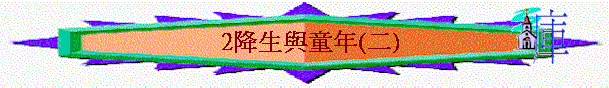

教師版
第二課：降生與童年（二）
７）再回伯利恆
太二：１
或許因頭一次報名上冊太急促而未能準確計算真正的人口數目，故羅馬王這時又再次下令要有報名上冊的事，約瑟與馬利亞再次重回伯利恆，今次他們找到可居住的房子了，故聖經中記載博士們到訪的不是馬棚而是屋子。此時的主耶穌約有一至兩歲，因按幾位博士所朝拜的主耶穌已是小孩子而非嬰孩（留心太：８—１５的用字），另及從大希律所殺的嬰孩的歲數而得知。
８）幾博士來朝
太二：１—１２
ａ）在東方匯合
聖經中沒有清楚記載究竟有多少個博士來朝，傳統的說法是三博士是按他們所獻的禮物的數目而推算。幾個博士（天文家或星相家）是從東方不同的地方到來，因原文中的東方是多數字，他們或許因著天體的超然現象而想及舊約聖經預言有星要出於雅各，故各自從所在之城隨著那星的引導到猶大地來。他們不是在同一地方到來的，而應或在半路上相遇而同行。從他們見到星開始至到達耶路撒冷約有年多的時間。
ｂ）錯誤的詢問
他們或許因著不明白聖經，而又憑自己的判斷以為王必是生在京城中，故他們不隨著那星的引領而走到耶路撒冷去，更向大希律詢問關乎主基督的事。但基督降生的消息卻引發大希律心中不安，因他是極其自私的人，常害怕自己的王位被奪，歷史上記載這人甚至為防王位被奪而把自己的親生兒子都殺掉。殘酷的大希律之不安使合城的人都落入驚恐中，太二：
３。基督降生對他們本是極喜樂的信息，可惜合城的人久享安舒而怕因有「新生王」的出現而引致動亂，竟滿足於現有的王（大希律是以東人，不是 神所要的以色列王），甚至忘了及故意輕忽 神對他們的應許。
默想：我們今天會否因著自己的己見而忽略 神的帶領呢？又會否為求安舒而故意忘卻 神的話呢？
ｃ）無知的領袖
大希律召齊了祭司長及民間的文士，詢問他們關乎基督降生的事，雖然祭司長及文士們熟知舊約聖經上的話，甚至可立刻的回應大希律王的詢問，指出「基督降生何處？」是記載在彌迦書五章二至三節。無奈他們卻是不信聖經的一群，故能指示博士們去伯利恆尋找基督，而他們卻不願去尋找那位所應許的救主。他們把 神對他們所應許的話當作與他們無關的事來述說，可嘆不認識聖經的外邦人竟比當時宗教領袖更熱切尋求 神，由這些人去帶領百姓認識 神，豈不成了最大的悲劇嗎？難怪主耶穌多次的指責他們為假冒為善的人，參太廿三：１３—３６
。
默想：聖經上的話是否與我們有密切的關係呢？我們是以旁觀的態度去看，或是以受書人的心境去看呢？
ｄ）陰險的囑咐
大希律暗暗的從博士們口中得知他們所見的奇事，並早已推算出基督當有多少歲，故當他發現被博士愚弄，就把耶路撒冷四境兩歲以內的小孩日都殺盡了，其殘酷及猜疑可見一班。他又假意的表示想望可去敬拜基督，故要求博士們在尋見基督後回來報信。他是那撒但所使用的工具，目的是剷除主基督，使祂不能來作成 神的救贖工作。大希律殘害嬰孩正應了先知耶利米的預言，參耶卅一：１５。
ｅ）真誠的敬拜
博士們在離開大希律後，得那星再次的指引，直走到主耶穌所居住那房子去。當他們得見主耶穌時，他們立刻俯伏在地敬拜孩童耶穌，留心他們沒有敬拜馬利亞，可見真正受尊崇的是孩童耶穌，雖則祂仍未有保護自己的能力，但祂確是生而為「王」，是配受敬拜的，甚至博士們所獻上的禮物都是為獻給王而預備的。朝拜主耶穌後，他們得天使指引從別的路離開猶大，使大希律不能及時找到主耶穌，讓約瑟有足夠時間逃亡。
９）逃亡下埃及
太二：１３—１８
主的使者在夢中指示約瑟逃往埃及，因大希律快要頒下屠殺令，而加利利又是大希律勢力範圍，北上回鄉必被大希律所擒。當時有很多猶大人聚居在埃及，易混在當中逃避追殺，大希律難以在當中尋找到這一對平凡的夫婦，加上埃及是直屬羅馬將軍管轄，非大希律勢力範圍所在，又因大希律與埃及的羅馬官員不和，使大希律不能大舉尋找，故埃及正好成了孩童耶穌最好的避難所，讓約瑟及馬利亞能帶著孩童耶穌躲避追殺。博士剛獻上的禮物黃金、乳香及沒藥足夠這家庭的旅費及生活使用。
默想： 神沒有使用甚麼神蹟性的拯救，只要人順服祂的指引來勝過仇敵，在我們的生活中順服 神的話之機會是較等候神蹟來得容易，但需要人願意順服。
１０）定居拿撒勒
太二：１９—２３
在大希律死了以後，主的使者在夢中向約瑟顯現，吩咐他帶小孩子和他母親上來。孩童耶穌從埃及上來，正好應驗了舊約先知的豫言，參何十一：
１。但約瑟因怕希律的兒子亞基老，約瑟回加利利的拿撒勒定居，卻不肯回伯利恆居住。這正好又應了先知所說的話，主要稱為拿撒勒人的話。拿撒勒之意是「芽或枝條」，是指樹被砍下，只剩下斷根在地上，後來在這斷根上有綠芽發生出來。拿撒勒在當時是有很多外邦人居住的地方，但在加利利眾城中是極不出名的小城，故為猶太人所輕看的，所以日後主耶穌出來傳道時；被猶太人輕看祂。或許這正要顯出如先知的預言，大衛家的根必發一條，雖起首被人所輕看，後因著 神的恩而被萬民認識，參賽十一：
１，耶卅三：１５。
默想：主耶穌這被輕看的人將要成為掌大權之人對我們有何提示呢？
１１）上耶路撒冷
路二：４２—５０
主耶穌十二歲時按律法上耶路撒冷，是要按猶太人的規矩歸在律法之下稱為「律法之子」，是表示從今以後有權去守節及遵守律法的要求。當禮儀的要求完成後，主耶穌未有隨同約瑟及馬利亞回去，反而留在耶路撒冷，當約瑟及馬利亞發現祂不在同行的大隊中，他們便回到耶路撒冷中找尋祂，那時，主耶穌正在殿中一面聽一面問，祂對天父的話甚感興趣及愛慕。
默想：主耶穌為人時，祂也盡心及仔細的研讀聖經，何況我們呢？主耶穌在此時所表現出來的心思值得我們效法，祂是全心全意的想念天父的事，並用心來聆聽及詢問聖經上的話。主耶穌是 神的兒子也要讀經，我們又如何呢？追求屬靈的事物是當不受年紀的限制。
１２）沉靜的歲月
路二：５１—５２
主耶穌回應祂的養父母，祂是應當以父（神）的事為念。主耶穌從年幼已關心父（神）的事了，祂從聖經中找到祂的使命及路向。但因父（神）的時候未到，主耶穌便順命隨約瑟與馬利亞回拿撒勒，在未正式出來傳道時，是仍服在養父母的手下，盡律法的責任。祂在各方面都均衡的成長──智慧及身量；並神及人喜愛的心都一同增長。祂按父（神）的心意，願謙卑祂自己並默默無聲的成長起來，在父（神）的時候未到之時以安靜來等候。按著約瑟的職業被訓練成一個木匠，木匠在當時代是低下的工作，社會地位並不高。在主耶穌出來傳道時，除了約瑟外每一個家庭成員都題及，可見約瑟是早逝。這個家庭需面對困難，我們的主早就擔負了這個家庭的重任。
默想：主耶穌的隱藏歲月給你甚麼鼓勵呢？有否因被別人忽略而沮喪呢？父 神正在欣賞你的忠心！主耶穌這艱難的家庭生活給與你甚麼安慰呢？有否為家境及際遇不及人而自卑難過呢？主耶穌正與你同走這困難的旅程，以祂的恩典來托著你！
請仔細讀太三：１３至四：１１、可一：９ —１３、路三：２１—２２及四：１—１４。
學生版
第二課：降生與童年(二)
Ｆ）再回伯利恆
１）可能是因要再次報名上冊或上去過節。
２）此時幾個博士由東方來，從他們見到星開始至到達耶路撒冷約有年多的時間，他們訪問大希律關乎主耶穌的事，祭司長和民間的文士雖知也不去尋找主，可見他們對神的應許是不認真。
３）博士朝見主時，主耶穌已是一個小孩子了，因從希律殺小孩子可知了。博士朝見主，所獻上的禮物是獻給王的，因主本是生而為王。
４）主的使者在夢中指示約瑟逃走，而博士所獻的禮物正好供應他們一家路上所需的費用。逃入埃及是北上加利利會很易被大希律捉到，另因大希律與埃及的官員不和，入了埃及正好逃避大希律的追殺。
５）大希律因捉到主而殺了兩歲以內的小孩子，可見他的猜疑及兇殘。
Ｇ）定居拿撒勒
１）在大希律死了以後，主的使者在夢中向約瑟顯現，吩咐他帶小孩子和他母親上來。孩童耶穌從埃及上來，正好應驗了舊約先知的豫言。
２）因怕希律的兒子亞基老，約瑟回加利利，這正好又應了先知所說的話，主要稱為拿撒勒人的話。而拿撒勒是有很多外邦人居住的地方，故為猶太人所輕看的，所以日後主耶穌出來傳道時；被猶太人輕看祂。
Ｈ）童年的片段
１）主耶穌十二歲時按律法上耶路撒冷，歸在律法之下稱為律法之子。
２）主耶穌在約瑟及馬利亞回去時並未跟隨大隊回去，反而留在耶路撒冷，當約瑟及馬利亞找到祂時，祂正在殿中一面聽一面問。主耶穌為人時，祂也盡心及仔細的研讀聖經，何況我們呢？
３）主耶穌回應祂的養父母，祂是應當以父（神）的事為念。主從年幼已關心父 （神）的事了。
４）但主耶穌在未正式出來傳道時，是仍服在養父母的手下，盡律法的責任。
５）主耶穌在孩童時的智慧及身量；並神及人喜愛的心都一同增長。
請仔細讀太三： 13至四：11、可一：9-13、路三：21-22及四：1-14。